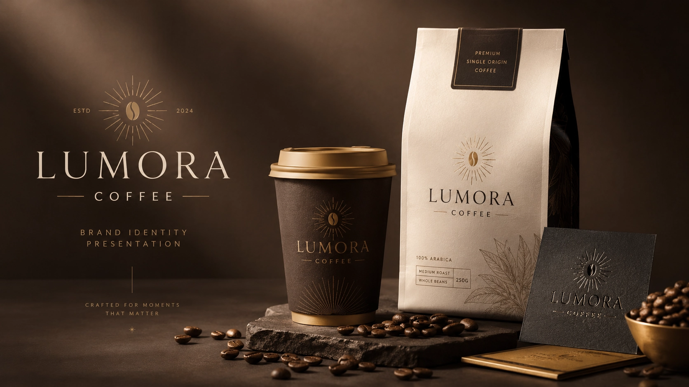
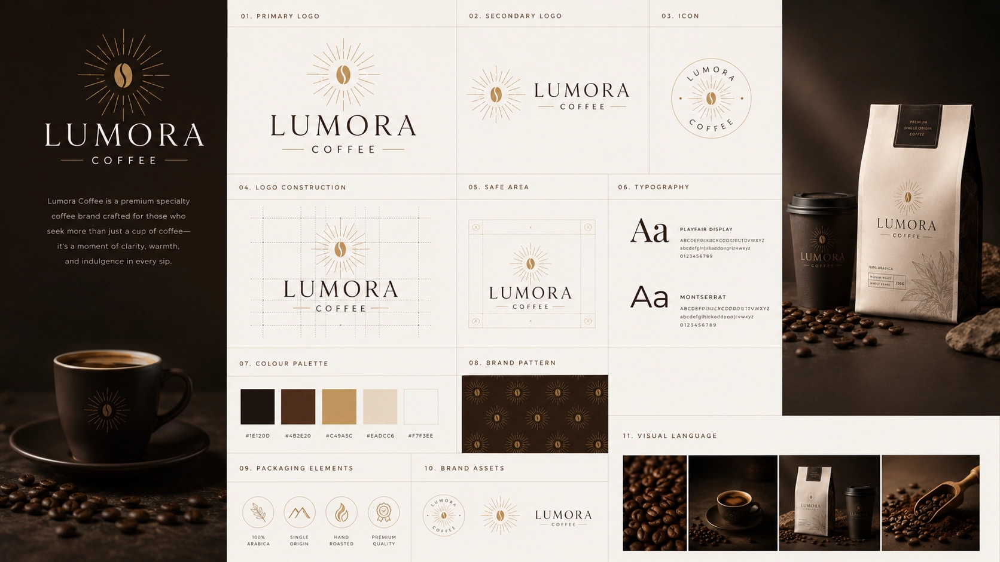
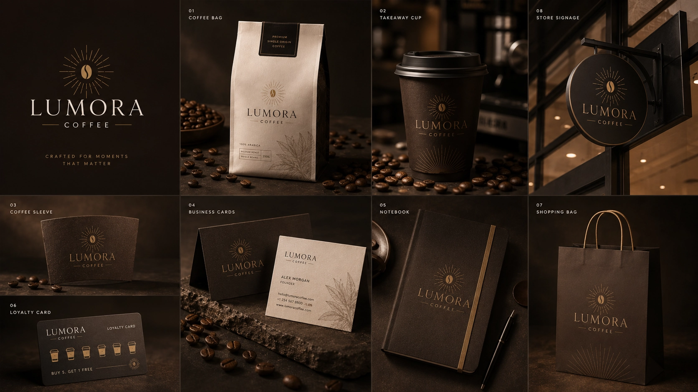
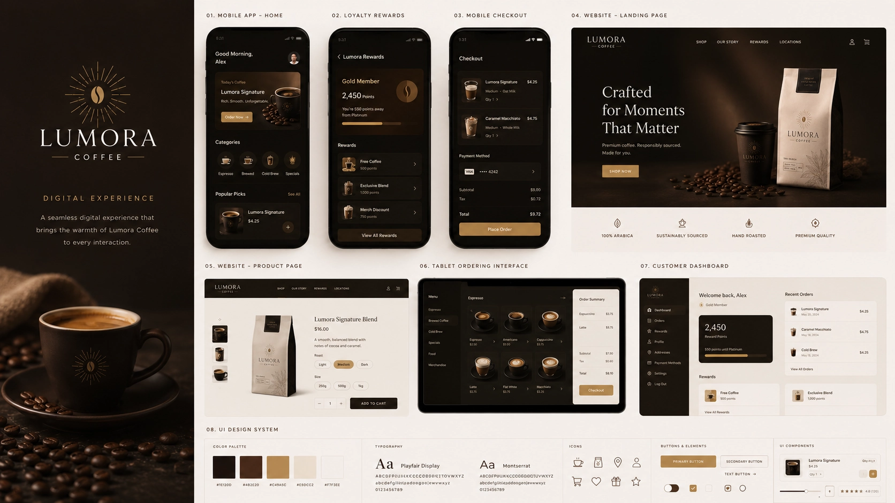
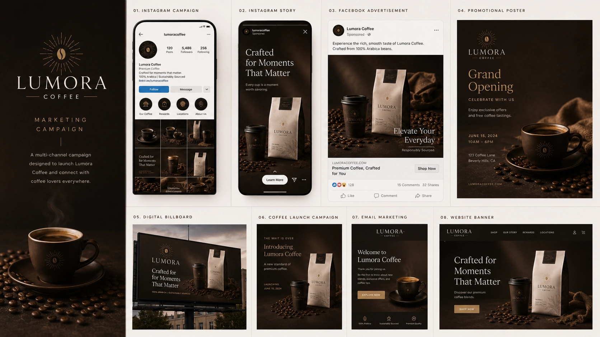
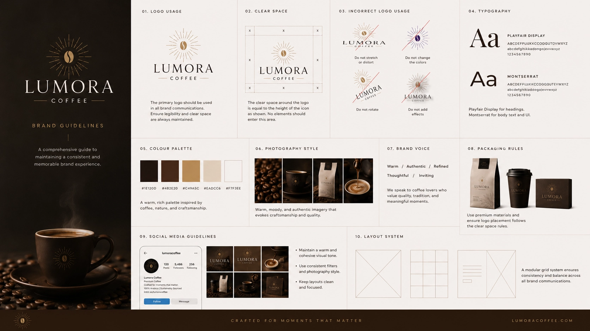

Crafting a premium specialty coffee brand that transforms everyday coffee rituals into refined, memorable experiences through thoughtful strategy, elegant packaging, and timeless visual design.

Lumora Coffee was created to redefine how people experience specialty coffee. Rather than competing on taste alone, the objective was to build a brand that communicates craftsmanship, warmth, and sophistication through every customer interaction. From the first glance at the packaging to the final sip, every visual element was designed to make the brand feel refined, memorable, and worthy of a premium audience.
Lumora Coffee
Specialty Coffee & Hospitality
Brand Strategy, Identity Design, Packaging Design
Logo, Packaging System, Brand Identity, Marketing Assets
Luxury is often expressed through restraint rather than excess. The Lumora identity system was designed to feel timeless, elegant and inviting, balancing rich typography, warm earthy colours and refined visual details. Every element works together to create a memorable coffee brand that feels equally at home on retail shelves, café environments and digital experiences.

A refined wordmark and elegant monogram were created to express craftsmanship, premium quality and timeless simplicity across every customer touchpoint.
A sophisticated combination of contemporary serif and clean sans-serif typefaces creates a balance between luxury, warmth and modern readability.
Rich espresso brown, warm cream and subtle gold accents reflect premium coffee culture while creating a welcoming and memorable visual identity.
Minimal compositions, generous whitespace and carefully crafted details create a brand experience that feels calm, premium and effortlessly recognisable.
A memorable coffee brand extends far beyond its logo. Every physical application—from packaging and takeaway cups to shopping bags and café signage—was carefully designed to create a cohesive experience that customers instantly recognise and remember. Each interaction reinforces Lumora's commitment to quality, craftsmanship and premium hospitality.

Luxury coffee bags and product packaging were designed to create strong shelf presence while communicating quality, freshness and craftsmanship.
Store signage, takeaway cups and in-store materials create a warm, welcoming atmosphere that reflects Lumora's refined personality.
Shopping bags, loyalty cards and printed collateral extend the identity beyond the café, creating memorable brand experiences customers proudly carry with them.
Every application follows a unified visual language, ensuring the Lumora identity remains elegant, recognisable and scalable across every customer touchpoint.
Today's premium coffee brands live across both physical and digital spaces. The Lumora identity was thoughtfully translated into an elegant digital experience—from mobile ordering and loyalty rewards to online shopping—creating a seamless journey that reflects the same warmth, craftsmanship and sophistication found in every cup.

A beautifully designed mobile experience allows customers to browse products, customise orders and purchase effortlessly while reinforcing Lumora's premium identity.
A refined rewards experience encourages repeat visits through personalised offers, exclusive benefits and an intuitive customer journey.
The online store mirrors the same elegance found in Lumora's physical packaging, making it easy for customers to explore, purchase and discover new products.
Every digital interaction follows the same visual language, ensuring customers experience one cohesive brand whether they're shopping online or visiting the café.
Great coffee brands don't simply sell products—they create anticipation, emotion and lasting connections. Lumora's marketing system was designed to deliver a consistent premium presence across social media, launch campaigns, email marketing and retail promotions, ensuring every communication reflects the same elegance as the brand itself.

Editorial-inspired content showcases products, coffee culture and behind-the-scenes craftsmanship while maintaining a refined and recognisable visual identity.
Limited edition blends and seasonal collections are introduced through beautifully coordinated campaigns that build excitement and encourage customer engagement.
Website banners, email campaigns and digital advertising work together to increase visibility while preserving Lumora's premium aesthetic across every platform.
Every customer touchpoint follows one consistent visual language, strengthening recognition and ensuring the brand feels polished wherever it appears.
A memorable identity is sustained through consistency. Lumora's brand guidelines provide a clear framework for applying the identity across packaging, retail environments, digital experiences and future marketing campaigns, ensuring every customer interaction feels cohesive, premium and unmistakably Lumora.

Every logo, colour, typography rule and visual element is documented to ensure the brand remains cohesive across every application.
The flexible identity system allows Lumora to expand into new cafés, seasonal collections and retail products while maintaining a unified brand experience.
The refined visual identity positions Lumora as a premium specialty coffee brand that inspires confidence, loyalty and lasting customer recognition.
Lumora Coffee emerged as a complete premium brand—combining thoughtful strategy, refined design and memorable customer experiences into a cohesive identity built to stand the test of time.